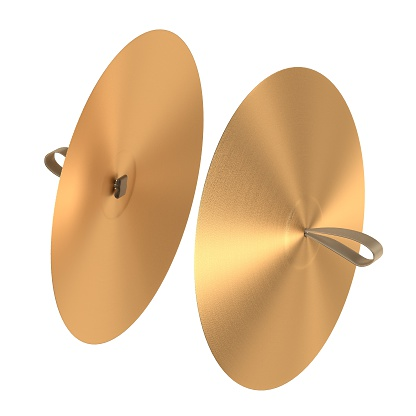
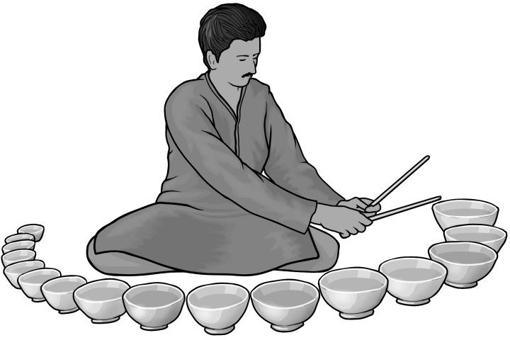

Plate Instruments
Cymbal
A cymbal is a common percussion instrument. Often used in pairs, cymbals consist of thin, normally round plates of various alloys. The majority of cymbals are of indefinite pitch, although small disc-shaped cymbals based on ancient designs sound a definite note (such as crotales). Cymbals are used in many ensembles ranging from the orchestra, percussion ensembles, jazz bands, heavy metal bands, and marching groups. Drum kits usually incorporate at least a crash, ride, or crash/ride, and a pair of hi-hat cymbals. A player of cymbals is known as a cymbalist.
Audio Clip
video Clip
Jal Tarang
The jal tarang is a melodic percussion instrument that originates from the Indian subcontinent. It consists of a set of ceramic or metal bowls filled with water. The bowls are played by striking the edge with beaters, one in each hand.